Örnek Başarı 1
Buraya başarının kısa bir açıklamasını yazabilirsin — ne zaman, nerede ve neden önemliydi.
Buraya link/görsel ekleyebilirsin →Merhaba, ben
Piyano çalmayı, kortta top koşturmayı ve elimden geldiğince yeni projeler üretmeyi seven bir lise öğrencisiyim.

Hakkımda
İstanbul'da Saint Joseph Fransız Lisesi'nde öğrenciyim. Piyano çalmayı, tenis oynamayı ve aklıma gelen fikirleri gerçek projelere dönüştürmeyi seviyorum.
İngilizce ve Fransızca konuşuyorum; farklı dillerde düşünmek bana olaylara farklı açılardan bakma alışkanlığı kazandırdı.
Web geliştirme ve yapay zeka araçlarıyla küçük kişisel projeler üretmeyi öğreniyorum — bu site de bunlardan biri.
(Bu alanı güncel öğrendiklerinle kolayca güncelleyebilirsin.)
Başarılar
Aşağıdaki kartlar örnek yer tutuculardır — kendi ödüllerin, projelerin ve sınav başarılarınla güncelleyebilirsin.
Buraya başarının kısa bir açıklamasını yazabilirsin — ne zaman, nerede ve neden önemliydi.
Buraya link/görsel ekleyebilirsin →Bir yarışma, sertifika ya da tamamladığın bir proje için kısa bir özet buraya gelebilir.
Buraya link/görsel ekleyebilirsin →İstersen bu kartı bir sınav sonucun ya da katıldığın bir etkinlik için kullanabilirsin.
Buraya link/görsel ekleyebilirsin →Bağlantılar
Bana özel bir dokunuş
Üç dil konuştuğum için, bu kartta gösterilen karşılama mesajı hem şu anki saate (günaydın / iyi günler / iyi akşamlar) göre değişiyor hem de Türkçe, İngilizce ve Fransızca arasında dönüyor. Sayfanın arka planında usulca süzülen sakura yaprakları da bu bölüme eşlik ediyor — fareni kıpırdatırsan onlara ince bir iz de eklenir.
Merhaba
Bu sayfaya uğradığın için teşekkürler.
İletişim
Bir proje fikri, ortak bir ilgi alanı ya da sadece merhaba demek istiyorsan, bana e-posta atman yeterli.
nehir.macar@sj.k12.tr
✉️ Bana e-posta gönder